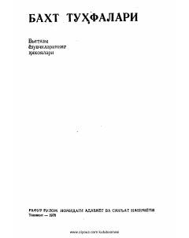

BTVyetnam yozuvchilarining hayotiy hikoyalari jamlangan to'plam.
Ushbu to'plam Vyetnam yozuvchilarining hikoyalaridan iborat bo'lib, unda turli xil insoniy taqdirlar va hayotiy voqealar tasvirlangan. Kitob rus tilidan Fatxiddin Nasriddinov tomonidan o'zbek tiliga tarjima qilingan.